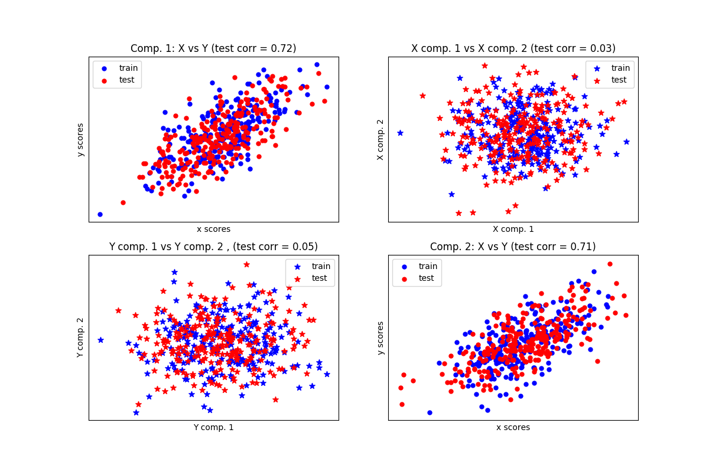

Note
Click here to download the full example code or run this example in your browser via Binder
Compare cross decomposition methods¶
Simple usage of various cross decomposition algorithms: - PLSCanonical - PLSRegression, with multivariate response, a.k.a. PLS2 - PLSRegression, with univariate response, a.k.a. PLS1 - CCA
Given 2 multivariate covarying two-dimensional datasets, X, and Y, PLS extracts the ‘directions of covariance’, i.e. the components of each datasets that explain the most shared variance between both datasets. This is apparent on the scatterplot matrix display: components 1 in dataset X and dataset Y are maximally correlated (points lie around the first diagonal). This is also true for components 2 in both dataset, however, the correlation across datasets for different components is weak: the point cloud is very spherical.
Out:
Corr(X)
[[ 1. 0.51 0.07 -0.05]
[ 0.51 1. 0.11 -0.01]
[ 0.07 0.11 1. 0.49]
[-0.05 -0.01 0.49 1. ]]
Corr(Y)
[[1. 0.48 0.05 0.03]
[0.48 1. 0.04 0.12]
[0.05 0.04 1. 0.51]
[0.03 0.12 0.51 1. ]]
True B (such that: Y = XB + Err)
[[1 1 1]
[2 2 2]
[0 0 0]
[0 0 0]
[0 0 0]
[0 0 0]
[0 0 0]
[0 0 0]
[0 0 0]
[0 0 0]]
Estimated B
[[ 1. 1. 1. ]
[ 2. 2. 2. ]
[-0. -0. 0. ]
[ 0. 0. 0. ]
[ 0. 0. 0. ]
[ 0. 0. -0. ]
[-0. -0. -0.1]
[-0. -0. 0. ]
[ 0. 0. 0.1]
[ 0. 0. -0. ]]
Estimated betas
[[ 1. ]
[ 2.1]
[ 0. ]
[ 0. ]
[ 0. ]
[-0. ]
[-0. ]
[ 0. ]
[-0. ]
[-0. ]]
print(__doc__)
import numpy as np
import matplotlib.pyplot as plt
from sklearn.cross_decomposition import PLSCanonical, PLSRegression, CCA
# #############################################################################
# Dataset based latent variables model
n = 500
# 2 latents vars:
l1 = np.random.normal(size=n)
l2 = np.random.normal(size=n)
latents = np.array([l1, l1, l2, l2]).T
X = latents + np.random.normal(size=4 * n).reshape((n, 4))
Y = latents + np.random.normal(size=4 * n).reshape((n, 4))
X_train = X[:n // 2]
Y_train = Y[:n // 2]
X_test = X[n // 2:]
Y_test = Y[n // 2:]
print("Corr(X)")
print(np.round(np.corrcoef(X.T), 2))
print("Corr(Y)")
print(np.round(np.corrcoef(Y.T), 2))
# #############################################################################
# Canonical (symmetric) PLS
# Transform data
# ~~~~~~~~~~~~~~
plsca = PLSCanonical(n_components=2)
plsca.fit(X_train, Y_train)
X_train_r, Y_train_r = plsca.transform(X_train, Y_train)
X_test_r, Y_test_r = plsca.transform(X_test, Y_test)
# Scatter plot of scores
# ~~~~~~~~~~~~~~~~~~~~~~
# 1) On diagonal plot X vs Y scores on each components
plt.figure(figsize=(12, 8))
plt.subplot(221)
plt.scatter(X_train_r[:, 0], Y_train_r[:, 0], label="train",
marker="o", c="b", s=25)
plt.scatter(X_test_r[:, 0], Y_test_r[:, 0], label="test",
marker="o", c="r", s=25)
plt.xlabel("x scores")
plt.ylabel("y scores")
plt.title('Comp. 1: X vs Y (test corr = %.2f)' %
np.corrcoef(X_test_r[:, 0], Y_test_r[:, 0])[0, 1])
plt.xticks(())
plt.yticks(())
plt.legend(loc="best")
plt.subplot(224)
plt.scatter(X_train_r[:, 1], Y_train_r[:, 1], label="train",
marker="o", c="b", s=25)
plt.scatter(X_test_r[:, 1], Y_test_r[:, 1], label="test",
marker="o", c="r", s=25)
plt.xlabel("x scores")
plt.ylabel("y scores")
plt.title('Comp. 2: X vs Y (test corr = %.2f)' %
np.corrcoef(X_test_r[:, 1], Y_test_r[:, 1])[0, 1])
plt.xticks(())
plt.yticks(())
plt.legend(loc="best")
# 2) Off diagonal plot components 1 vs 2 for X and Y
plt.subplot(222)
plt.scatter(X_train_r[:, 0], X_train_r[:, 1], label="train",
marker="*", c="b", s=50)
plt.scatter(X_test_r[:, 0], X_test_r[:, 1], label="test",
marker="*", c="r", s=50)
plt.xlabel("X comp. 1")
plt.ylabel("X comp. 2")
plt.title('X comp. 1 vs X comp. 2 (test corr = %.2f)'
% np.corrcoef(X_test_r[:, 0], X_test_r[:, 1])[0, 1])
plt.legend(loc="best")
plt.xticks(())
plt.yticks(())
plt.subplot(223)
plt.scatter(Y_train_r[:, 0], Y_train_r[:, 1], label="train",
marker="*", c="b", s=50)
plt.scatter(Y_test_r[:, 0], Y_test_r[:, 1], label="test",
marker="*", c="r", s=50)
plt.xlabel("Y comp. 1")
plt.ylabel("Y comp. 2")
plt.title('Y comp. 1 vs Y comp. 2 , (test corr = %.2f)'
% np.corrcoef(Y_test_r[:, 0], Y_test_r[:, 1])[0, 1])
plt.legend(loc="best")
plt.xticks(())
plt.yticks(())
plt.show()
# #############################################################################
# PLS regression, with multivariate response, a.k.a. PLS2
n = 1000
q = 3
p = 10
X = np.random.normal(size=n * p).reshape((n, p))
B = np.array([[1, 2] + [0] * (p - 2)] * q).T
# each Yj = 1*X1 + 2*X2 + noize
Y = np.dot(X, B) + np.random.normal(size=n * q).reshape((n, q)) + 5
pls2 = PLSRegression(n_components=3)
pls2.fit(X, Y)
print("True B (such that: Y = XB + Err)")
print(B)
# compare pls2.coef_ with B
print("Estimated B")
print(np.round(pls2.coef_, 1))
pls2.predict(X)
# PLS regression, with univariate response, a.k.a. PLS1
n = 1000
p = 10
X = np.random.normal(size=n * p).reshape((n, p))
y = X[:, 0] + 2 * X[:, 1] + np.random.normal(size=n * 1) + 5
pls1 = PLSRegression(n_components=3)
pls1.fit(X, y)
# note that the number of components exceeds 1 (the dimension of y)
print("Estimated betas")
print(np.round(pls1.coef_, 1))
# #############################################################################
# CCA (PLS mode B with symmetric deflation)
cca = CCA(n_components=2)
cca.fit(X_train, Y_train)
X_train_r, Y_train_r = cca.transform(X_train, Y_train)
X_test_r, Y_test_r = cca.transform(X_test, Y_test)
Total running time of the script: ( 0 minutes 0.384 seconds)